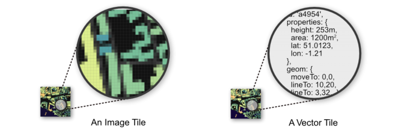

Web Maps for Web Developers
Niene Boeijen
github.com/NieneB/webmapping_for_developers


Propedeuse Art Academy
MSc Geo Information Science
Internship Geo Web Visualization
Maptime Amsterdam & Utrecht
Web Cartographer
Webmapper
Utrecht, the Netherlands
Data - Design - Technology
Webmapper
Utrecht, the Netherlands
We make interactive maps & geo data visualizations
Our expertise is open {source; data; standards}
We combine cartography with web technology
What I make:


The Goal of this evening
From Geo Data to the web
What you need to know as a web developer wanting to make a web map
Focus on the client side

Let's talk maps!
"Everything is related to everything else, but near things are more related than distant things"Tobler's first law of geography
Power of Maps
.. why so many relate to maps and geography is that we have no choice but to think and see spatially.
They stimulate both sides of our brain: the right side that’s intuitive and aesthetic, and the left side that’s rational and analytical. Maps are this wonderful combination of both.
What is Geo Data ?
Geo Data = Data + Location

Maps = Collection of Geo data
Maps organize complex data about the environment.
Reveal patterns and relationships.
Maps allow us to communicate about location using a common framework
Coordinate system
Communicate locations & distances on the Earth's surface

Shape of the earth?

The real shape of the earth is too complex to be useful as a reference for measurement..
Geographic coordinate system

3D model
Longitude, Latitude
Geographic Coordinate System:
WGS84 EPSG:4326
Lon Lat in decimal degrees
GPS
Projected coordinate system

Mathematical projection / translation
2D
Projected Coordinate System:
Spherical/Web Mercator EPSG:3857
Square, scale not relevant, shapes important
Google scheme EPSG:900913

We store data in EPSG:4326, but display it in EPSG:3857!
Standard way to store most geodata for the Web:
{
"type": "Feature",
"geometry": {
"type": "Point",
"coordinates": [5.2394137,52.0819662]
},
"properties": {
"name": "Hotel Theater Figi"
}
}Why is Mercator wrong?
Projected Coordinate System:
RD New EPSG:28992
Netherlands!

Geographic Coordinate System:
WGS84 EPSG:4326
Projected Coordinate System:
Web Mercator EPSG:3857
Projected Coordinate System:
RD New EPSG:28992

Getting my map to the web

OGC standards
- WMS
- WMTS
- WFS
Defacto - Community standard -
Google/OSM (XYZ) - TMS - QuadTrees (Microsoft)
https://developers.google.com/maps/documentation/javascript/coordinates
What is a web map?
Analogue paper maps
| Digital maps | VS | Web Maps |
|---|---|---|
| Data | Tiles, styles and servers | |
| On the computer | View in a browser | |
| Calculate, analyze | scroll, pan, zoom |

openstreetmap.org
google.com/maps
a little History
Digital maps
GIS software
GIS on the Web is not user friendly..
1996 Mapquest first with a web service!
But really slow to load..
in 2004 Endoxon found a way for quick online mapping! map.search.ch
2005 Google Maps took over!
The solution?
Tiles!
Tiles
All tiles size 256x256 pixels
Placed in a grid, sharing boundaries
Seamless map
Slippy maps, Google/OSM (XYZ) - TMS - QuadTrees (Microsoft)
All these little tiles load way faster than one big map!
Zoom levels
Each zoom level has its own set of tiles!
Zoom level 0: 1 tile for the whole world.
Increases exponentially...
Zoom level 1: 4 tiles
Zoom level 2: 16 tiles
etc.
 Map with tile
bounds
Map with tile
bounds
Serving tiles
{kind=link}

Tiles are styled and rendered in advance

Vector Tiles
the newest technology!
From Raster to Vector
Disadvantages Raster Tiles
No interaction with objects
No information available about objects
Multiple visualizations = multiple tile sets
Vector Tile

No colours
Arrays in a 256 x 256 matrix
Same tiling schema as Raster png tiles.
Binary format
Simplifies geometries

Advantages Vector tiles
Rendering is done on client side not by the server
So different clients can style a map different
Small tile size. So faster data transfer.
High resolution.
Direct access to feature information.
Standards
Mapbox Vector Tile Standard.Based on the binary protocal buffer (.pbf) from Google.
Standard already used by Esri.
Web Mercator projection, Google tiling scheme.
Formats
.mvt - .pbf
.mbtiles
Want to know more?
About Vector-tiles from Mapbox
Open map tiles alternative
Cartiqo our own alternative
The Client side
Web Map Building blocks
- Map Interface and Interaction
- Zoom, panning, clicking etc.
- Map events
- Tiles (raster/vector) as Base Layer
- Additional Data
- File (GeoJSON)
- WMS,WFS
- Tiles
JavaScript Libraries for Mapping
Vector tiles
OpenLayers 3 -- Leafletseveral plugins available
Mapzen Tangram
Let's look at Leaflet for Raster tile maps
and MapboxGL.js for Vector Tile maps
Both in the workshop!
When to use what?!
Leaflet.js
An Open-Source JavaScript Library for Mobile-Friendly Interactive Maps
simplicity, performance and usability
Developed by: Vladimir Agafonkin.
Weighing about 38 KB of JS.
Has all the mapping features most developers ever need.
Can be extended with Plugins
Well documented
What Leaflet does not do:
Provide data for you.
Provide the basemap.
Its not GIS
Leaflet is a framework
Layers
Base Layer
Raster

Data Layer / Feature Layer
Vector

Raster tile base map providers
let map = L.map('map').setView([51.505, -0.09], 13);
L.tileLayer('http://{s}.tile.osm.org/{z}/{x}/{y}.png', {
attribution: '© OpenStreetMap contributors'
}).addTo(map);
Adding data layers
WMS, WFS (slow)
GeoJSON
let marker = L.marker([52.372825, 4.900321]).addTo(map);
// ADD a WMS layer
let cbs = L.tileLayer.wms('https://geodata.nationaalgeoregister.nl/wijkenbuurten2018/wms', {
'layers': 'cbs_buurten_2018',
'styles': 'wijkenbuurten2018:wijkenbuurten_thema_buurten_gemeentewijkbuurt_percentage_eenpersoonshuishoudens',
'srs': 'EPSG:28992',
'format': 'image/png',
'transparent': true,
'opacity': 0.5
}).addTo(map);
Projections
Use EPSG:28992 > Government in Netherlands obliged to use it!
MapboxGL.js

mapboxgl.accessToken = 'yourowntoken';
var map = new mapboxgl.Map({
container: 'map-container',
style: 'style.json',
hash: true,
zoom: 11,
pitch: 60,
bearing: 62.4,
center: [ 4.8, 52.4]
});
style.json
{
"version": 8,
"name": "Mijn eigen Stijl",
"sprite": "url",
"glyphs": "url/{fontstack}/{range}.pbf",
"sources": {...},
"layers": [
{
"id": "background",
"type": "background",
"paint": { "background-color":"#FFFFFF" }
},
{...}
]
}
Layers or layers ???
Source
Data layers in tile
Style layer
Leaflet every source is a layer


Vector Tile providers
- Mapbox
- Maptiler
- OpenMapTiles
- OpenZoomStack
- ESRI
- Cartiqo
- PDOK?
Use without token requires own source data!
Generators

cartiqo
Vector Tiles of the Netherlands
Based on Dutch Open Geo data & OSM
Consistent
Easy understandable layers and naming
Uniform throughout all zoom levels and source data
Developed by Webmapper
Hosted on Maptiler.nl
Let's Map!
Everything is on Github
github.com/NieneB/webmapping_for_developers
Thank you!
Feedback please?
Stay in touch or questions:
niene@webmapper.net
| niene@webmapper.net |
| @BNiene |
| NieneB |
| NieneB.nl |
| Niene Boeijen |
| volvo_343_dl_1980 |